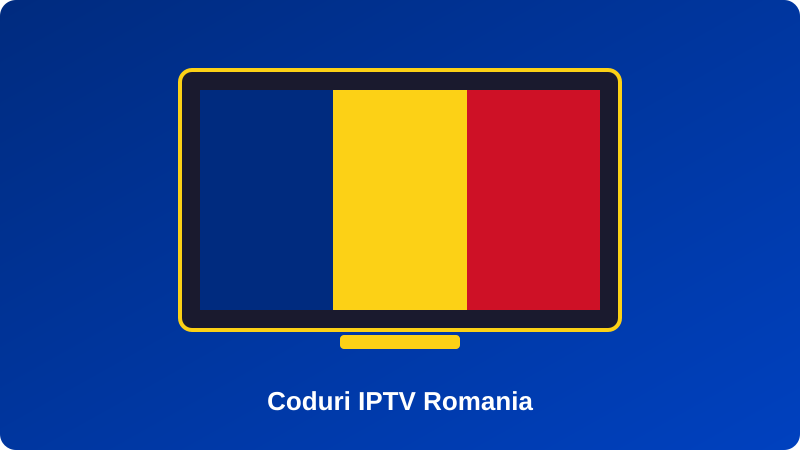

Daca ai cautat coduri iptv romania, probabil vrei sa vezi canalele romanesti pe televizor fara sa pierzi ore cu liste care nu merg. Cuvantul "cod" apare peste tot: in mesaje, in aplicatii, pe forumuri. Totusi, putini explica simplu ce este si cum se foloseste.
Pe scurt, un cod este cheia ta personala de acces. Il introduci o singura data in aplicatie, iar serverul iti trimite lista de canale, ghidul de programe si, uneori, filmele la cerere. Fara el, ecranul ramane gol. De aceea merita sa intelegi cum functioneaza, ca sa eviti erorile obisnuite si pierderea timpului seara, in fata televizorului.
In ghidul de mai jos explicam ce sunt coduri iptv romania, cum le activezi, pe ce aparate merg si ce faci daca apar probleme. Echipa Romania IPTV lucreaza zilnic cu familii din Romania si din diaspora, deci sfaturile vin din situatii reale. Daca esti la inceput, citeste si ghidul despre iptv romania.

Cuprins
- Ce sunt coduri iptv romania si la ce folosesc
- Cum functioneaza codurile iptv romania pas cu pas
- Cum activezi coduri iptv romania pe televizor
- Pe ce aparate merg codurile iptv romania
- Coduri iptv romania gratis: ce merge si ce nu
- Ce canale romanesti poti vedea cu un cod valid
- Coduri iptv romania pentru diaspora
- Cum alegi furnizorul potrivit
- Intrebari frecvente
- Concluzie
Ce sunt coduri iptv romania si la ce folosesc
Cand cineva scrie coduri iptv romania in Google, de obicei vrea unul din doua lucruri: un cod de activare pentru a vedea canalele romanesti pe televizor sau o lista gratuita de adrese. Prima varianta functioneaza stabil, a doua se opreste dupa cateva ore. Pentru a intelege diferenta, trebuie sa stii ce este, de fapt, un cod.
Un cod este un sir de caractere care leaga abonamentul tau de aplicatia instalata pe aparat. Dupa ce il introduci, serverul recunoaste contul, incarca lista de canale si ghidul de programe. Daca vrei mai multe detalii despre notiune, avem si un articol dedicat despre code iptv.
Cod de activare, cont Xtream si link M3U
In practica, termenul acopera trei formate. Codul de activare se scrie o singura data. Contul Xtream contine utilizator, parola si adresa serverului. Linkul M3U este o adresa lunga, pe care o lipesti in orice player compatibil. Toate fac acelasi lucru, adica spun aplicatiei ce abonament sa deschida.
De ce cauta romanii aceste coduri
Romanii din tara vor sa adune canalele intr-un singur loc, iar cei din diaspora vor sa nu piarda stirile, emisiunile si meciurile. In Germania, Italia, Spania sau Marea Britanie, cablul local nu ofera canale romanesti, deci un cod valid devine cea mai simpla solutie.
Cum functioneaza codurile iptv romania pas cu pas
Procesul este mai simplu decat pare. Dupa ce primesti coduri iptv romania de la furnizor, aplicatia trimite datele catre server, iar acesta raspunde in cateva secunde cu lista completa. La urmatoarea pornire nu mai trebuie sa scrii nimic.
Ce verifica serverul
Serverul compara codul cu baza de abonati, verifica data de expirare si numarul de conexiuni permise. Daca toate sunt in regula, apar canalele, iar ghidul de programe (EPG) se incarca automat.
Cate dispozitive pot folosi acelasi cod
Depinde de abonament. Majoritatea ofera una sau mai multe conexiuni simultane. Daca doua televizoare folosesc acelasi cod in acelasi timp si planul include o singura conexiune, unul dintre ele se va opri.
Cum tii datele in siguranta
Trateaza codul ca pe o parola. Nu il posta in grupuri publice si nu il trimite unor necunoscuti. Oricine il vede poate ocupa conexiunile pe care le-ai platit tu.
| Format | Unde il introduci | Potrivit pentru |
|---|---|---|
| Cod de activare | Aplicatie cu portal propriu | Incepatori |
| Cont Xtream | Player compatibil Xtream | Ghid complet de programe |
| Link M3U | Orice player M3U | Aparate mai vechi |
Cum activezi coduri iptv romania pe televizor
Activarea dureaza de obicei sub cinci minute. Ai nevoie de o aplicatie compatibila, de internet stabil si de codul primit pe WhatsApp.
- Instaleaza aplicatia din magazinul televizorului sau al boxului.
- Deschide sectiunea pentru adaugarea unei liste sau a unui cont.
- Alege formatul: cod, Xtream sau M3U.
- Scrie datele exact cum le-ai primit, fara spatii in plus.
- Salveaza si asteapta incarcarea canalelor.
Greseli de scriere frecvente
Cea mai comuna problema este confuzia dintre litera O si cifra 0 sau dintre l si 1. Copiaza codul din mesaj si lipeste-l direct in aplicatie. Pe televizor poti folosi tastatura telefonului, prin aplicatia de control.
Ce faci daca lista nu se incarca
Verifica internetul, apoi data si ora aparatului, pentru ca o ora gresita poate bloca autentificarea. Daca nu merge nici asa, trimite o captura a erorii echipei de suport.
Primul test dupa activare
Dupa ce lista s-a incarcat, deschide un canal de stiri, apoi unul sportiv si unul pentru copii. Verifica daca sunetul si imaginea sunt sincronizate, daca ghidul de programe afiseaza emisiunile corecte si daca schimbarea canalului dureaza doar o secunda sau doua. Daca observi ceva neobisnuit, noteaza ora si canalul si trimite-le echipei de suport, pentru ca astfel problema se rezolva mult mai repede.
Reinnoirea abonamentului
La expirare, codul nu se schimba, ci doar se prelungeste valabilitatea. Dupa plata, repornesti aplicatia si lista revine in cateva secunde.
Pe ce aparate merg codurile iptv romania
Cele coduri iptv romania functioneaza pe aproape orice aparat modern conectat la internet. Important este sa existe o aplicatie compatibila.
Smart TV si Android TV Box
Smart TV-urile Samsung, LG si Android TV ruleaza direct aplicatia. Un Android TV Box conectat prin cablu ramane una dintre cele mai stabile solutii, mai ales seara, cand reteaua este incarcata.
Fire TV Stick, Apple TV, telefon si computer
Fire TV Stick este ieftin si usor de instalat, iar Apple TV are o interfata curata. Pe telefon si pe computer introduci acelasi cod, deci urmaresti canalele si in calatorii.
Viteza de internet recomandata
Pentru HD ai nevoie de aproximativ 10 Mbps, iar pentru 4K de aproximativ 25 Mbps. Wi-Fi-ul este suficient daca aparatul este aproape de router, dar cablul Ethernet este varianta sigura.
Coduri iptv romania gratis: ce merge si ce nu
Multi cauta coduri iptv romania gratuite si gasesc liste pe forumuri sau pe retele sociale. Sa fim sinceri: acestea sunt publice, deci mii de oameni le folosesc simultan, iar serverul se aglomereaza. Rezultatul este imaginea care se blocheaza tocmai la meci sau la film.
De ce se opresc listele publice
O lista fara proprietar nu are suport, nu are garantie si poate disparea oricand. Nu stii nici cine administreaza serverul. Pentru vizionare zilnica, un abonament cu suport este mult mai potrivit.
Varianta sigura: testul oferit de furnizor
Cea mai buna cale este un test gratuit, primit direct de la furnizor. Il folosesti cateva zile, vezi calitatea in orele de varf si abia apoi decizi. Pentru criteriile de alegere, citeste ghidul despre cel mai bun iptv.
Cat costa timpul pierdut
Cautarea unei liste care merge, testarea ei si apoi inlocuirea ei dupa cateva zile consuma mai mult decat pretul unui abonament lunar. Un cod personal te scuteste de toate acestea.
Ce canale romanesti poti vedea cu un cod valid
Un abonament bun include peste 100 de canale romanesti, cu ghid de programe si inregistrari recente. Lista completa se afla pe pagina de canale.
Stiri, generaliste si sport
Aici intra posturile de stiri, televiziunile generaliste cu seriale si emisiuni de seara, plus canalele sportive cu fotbal si alte competitii. Daca vrei si recomandari de furnizor, vezi cel mai bun iptv romania.
Copii, filme si muzica
Familiile cu copii cauta desene animate in limba romana, iar iubitorii de filme vor canale dedicate. Muzica romaneasca si posturile regionale completeaza oferta.
Biblioteca de filme si seriale
Multe abonamente includ si continut la cerere. Il gasesti in aceeasi aplicatie, fara alt cod si fara alta plata, deci ai tot ce iti trebuie intr-un singur loc.
Coduri iptv romania pentru diaspora
Romanii din strainatate sunt cei mai multi utilizatori ai acestor servicii. Codul functioneaza din orice tara, atata timp cat ai internet, deci nu depinde de antena sau de cablu.
Germania, Italia, Spania si Marea Britanie
Indiferent unde locuiesti, instalezi aplicatia, introduci codul si vezi aceleasi canale ca acasa. Diferenta de fus orar nu conteaza, pentru ca multe emisiuni pot fi urmarite si ulterior.
Ora locala si programul emisiunilor
Ghidul de programe se afiseaza dupa ora locala a aparatului tau. Prin urmare, daca locuiesti in Marea Britanie, vei vedea jurnalul de seara cu o ora mai devreme fata de Romania. Aplicatiile bune iti permit si sa te intorci la emisiunile din ultimele zile, ceea ce rezolva diferenta de fus orar fara nicio setare speciala.
Calatorii si vacante
Poti folosi acelasi cod pe telefon, in tren sau in vacanta. Pentru comparatie, existe servicii similare pentru alte comunitati, de exemplu greek iptv pentru publicul grec sau tilaa iptv pentru cel din Finlanda, dar fiecare furnizor are propriile coduri si reguli.
Cum alegi furnizorul potrivit
Nu toti furnizorii ofera aceeasi calitate. Inainte sa platesti, cere un test si urmareste cateva seri la rand. Pentru o introducere completa, citeste articolul iptv romania si compara oferta cu ce ai nevoie.
Criterii care conteaza
- Stabilitate in orele de varf, adica seara si in weekend.
- Suport rapid, in limba romana.
- Test gratuit, fara card.
- Pret clar, fara taxe ascunse.
Intrebari de pus inainte de plata
Intreaba cate conexiuni primesti, pe ce aparate se poate folosi codul, cum se face reinnoirea si ce se intampla daca ai o problema tehnica duminica seara. Raspunsurile clare arata un furnizor serios, iar raspunsurile vagi sunt un motiv bun sa mai cauti.
Semne de avertizare
Fii atent la oferte prea ieftine, la furnizori fara nicio persoana de contact si la cei care cer plata prin metode neobisnuite. Un serviciu serios raspunde repede si explica ce primesti.
De ce Romania IPTV
Echipa Romania IPTV ofera cod de test, suport pe WhatsApp si ajutor la instalare pentru televizoare, boxuri si telefoane. Astfel, primesti un cod personal si il folosesti fara griji.
Intrebari frecvente despre coduri iptv romania
Ce sunt coduri iptv romania?
Sunt coduri de activare sau date de acces care leaga abonamentul tau de aplicatia de pe televizor, telefon sau box si incarca lista de canale romanesti.
Unde gasesc coduri iptv romania gratis?
Listele publice de pe forumuri sunt instabile si nesigure. Varianta sigura este un cod de test oferit gratuit de un furnizor.
Cum introduc un cod iptv?
Deschizi aplicatia compatibila, alegi adaugarea unui cont sau a unei liste, scrii codul exact cum l-ai primit si salvezi.
Pot folosi codul din strainatate?
Da. Codul merge din orice tara, daca ai o conexiune buna la internet. De aceea este popular printre romanii din diaspora.
De ce spune aplicatia ca codul este invalid?
De obicei din cauza unei litere gresite, a unui spatiu in plus sau a abonamentului expirat. Copiaza si lipeste codul, apoi verifica reinnoirea.
Pot folosi un cod pe doua televizoare?
Doar daca abonamentul include mai multe conexiuni simultane. Altfel, unul dintre aparate se va opri.
Ce viteza de internet am nevoie?
Aproximativ 10 Mbps pentru HD si 25 Mbps pentru 4K. Cablul Ethernet este mai stabil decat Wi-Fi-ul.
Cum primesc un cod de test?
Scrie-ne pe WhatsApp, spune ce aparat folosesti si primesti un cod de test, fara card si fara contract.
Primesti un cod de test gratuit
Scrie-ne pe WhatsApp, spune-ne ce aparat folosesti si primesti un cod de test fara card si fara contract.
Scrie pe WhatsAppConcluzie
Cele coduri iptv romania nu sunt complicate: este cheia personala care deschide lista ta de canale. Foloseste doar coduri primite de la un furnizor, copiaza-le fara greseli, testeaza seara si pastreaza datele la indemana. Astfel ai televiziunea romaneasca acasa, oriunde in lume.
Pentru mai multe informatii, citeste ghidul iptv romania, apoi scrie-ne pe WhatsApp si porneste-ti canalele preferate cu Romania IPTV.
Citeste in continuare: code iptv, cel mai bun iptv si cel mai bun iptv romania.